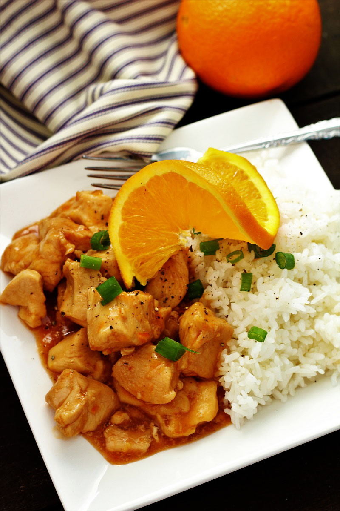

Orange chicken

Recipe description
Orange chicken is the signature dish of the American fast food chain Panda Express,
which sells over 100 million pounds of it every year. In the TV series The Big Bang Theory,
the character Sheldon's favorite Chinese food is orange chicken.
Ingredients used in the recipe
- 1 ½ cups water
- ⅓ cup rice vinegar
- ¼ cup lemon juice
- 2 ½ tablespoons soy sauce
- 2 tablespoons orange juice
How to prepare it step-by-step
- Gather all ingredients.
- Combine water, rice vinegar, lemon juice, soy sauce, and orange juice for sauce into a saucepan over medium-high heat. Stir in brown sugar, green onion, orange zest, ginger, garlic, and pepper flakes; bring to a boil. Remove from heat, and cool for 10 to 15 minutes.
- Place chicken in a resealable plastic bag. Pour in 1 cup cooled sauce. Seal the bag, and refrigerate for at least 2 hours. Reserve the remaining sauce.
- Mix flour, salt, and pepper in another resealable plastic bag.